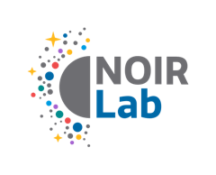
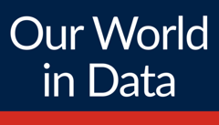
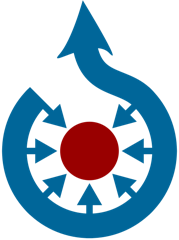

مصادرنا، وشكرٌ واجب
كل ما ننشره من أخبار ومقالات وصور وبيانات يقوم على جهد علماء وصحفيين ومصورين ومؤسسات حول العالم. هذه الصفحة عرفانٌ لهم، ودليلٌ لمن أراد أن يعود إلى المصدر الأصلي.
وكالات ومؤسسات علمية
مصادر حكومية وعامة نستقي منها الأخبار والصور، وكثير من موادها ملكية عامة.

مختبر نويرلاب للفلكيدير مراصد أرضية كبرى، ومنه صور الشهب وتاج الشمس في موقعنا بترخيص CC BY 4.0.noirlab.edu ↗ JAXA وكالة استكشاف الفضاء اليابانيةصاحبة مهمتي هايابوسا إلى الكويكبات، ومنها صور الكويكب إيتوكاوا.global.jaxa.jp ↗مصادر المعرفة المفتوحة
منصات ومجلات تتيح محتواها بتراخيص مفتوحة تسمح بالترجمة والنشر مع ذكر المصدر.

Our World in Dataبيانات ورسوم بيانية عن أكبر قضايا العالم من جامعة أكسفورد، بترخيص CC BY.ourworldindata.org ↗ المكتبة العامة للعلومناشر غير ربحي لمجلات علمية مفتوحة الوصول بالكامل بترخيص CC BY.plos.org ↗ eLife مجلة إي لايفمجلة علمية مفتوحة الوصول في علوم الحياة والطب، بترخيص CC BY.elifesciences.org ↗
ويكيميديا كومنزمكتبة ملايين الصور الحرة. منها تأتي معظم صور مقالاتنا، مع اسم المصوّر والترخيص تحت كل صورة.commons.wikimedia.org ↗ SSS Solar System Scopeخامات الكواكب التي بُنيت بها المجموعة الشمسية في واجهة موقعنا، بترخيص CC BY 4.0.solarsystemscope.com ↗منصات أخبار العلم
مواقع نتابعها يوميًّا لنعرف أحدث الأبحاث. نكتب عنها مقالات عربية أصيلة مع رابط الخبر الأصلي، ولا ننقل نصوصها.
كتّاب ومراجع
أصحاب المقالات العالمية التي نعرضها في «مقالات عالمية»، .
الكتب والمراجع التي بُنيت عليها كتبنا
كتب العلماء والمؤلفين الذين تعلّمنا منهم ورجعنا إليهم ونحن نؤلّف كتب المؤسسة. كتبنا تأليف عربي أصيل، وهذه مراجعها التي ندين لها بالفضل.
تنبيه: ذكر هذه الجهات هنا شكرٌ ونسبةٌ للفضل إلى أهله، ولا يعني شراكة رسمية ولا تأييدًا منها لمؤسسة إرتوفيا الخيرية أو لما ننشره. وتبقى الأسماء والعلامات التجارية ملكًا لأصحابها.
نذكر تحت كل صورة اسم صاحبها وترخيصها، وأسفل كل مقال مصدره الأصلي وترخيصه. وإن لاحظت خطأً في النسبة فراسلنا على artoviacentr@gmail.com لنصححه.
الشعارات المعروضة من ويكيميديا كومنز: شعار PLOS وشعار ويكيميديا كومنز (CC BY-SA 3.0)، وشعارات Our World in Data وMIT Technology Review وAeon وNOIRLab وكالتك (ملكية عامة لبساطتها). أما الجهات التي تقيّد استخدام شعاراتها، مثل ناسا، فاكتفينا باسمها.